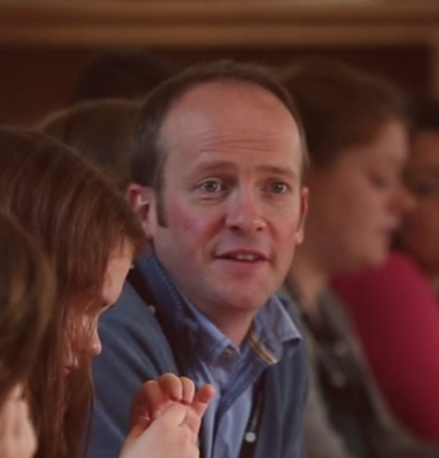

In April 2015 the Scottish Schools Pipes and Drums Trust changed its name from the East Lothian Pipes and Drums Trust to reflect the expansion of our work in Scotland. Our new website is under construction, but here is a snapshot of activities.
No other country has such as clearly identified national instrument, yet the vast majority of young people in our state schools are not offered the chance to learn pipes and drums on a par with other instruments. Playing in a pipe band brings a huge range of benefits: it builds self esteem, teamwork, a sense of dress, discipline and pride; pupils can gain SQA accredited qualifications right up to degree level; and piping is a passport to the world. Pipe bands also strengthen schools, and bring communities together.
We work with state schools, local authorities, and partners to provide tuition and to develop school pipe bands. Currently SSDPT supports over 800 young people through 16 projects in nine local authority areas.
Our Govan Schools programme started in 2014 in partnership with Govan Weavers. It offers piping and drumming in four primary schools leading to two secondary schools.
“It is impossible to overestimate the impact that piping and drumming has had in Preston Lodge High School in recent years. The Preston Lodge Pipe Band has grown quickly from a tentative group of new players into the flourishing figurehead of our school and its community. Young people of all ages and abilities, have benefited immeasurably from the skill development and self-esteem building that piping and drumming can provide.”  Gavin Clark, Head Teacher, Preston Lodge High School, East Lothian.SSDPT’s first project, started in 2007